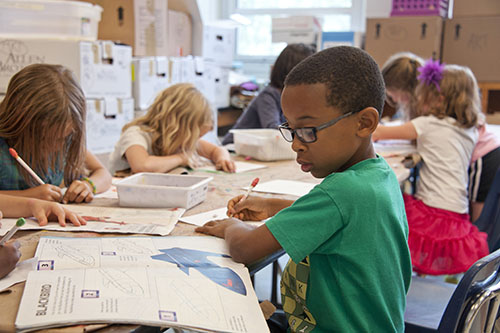
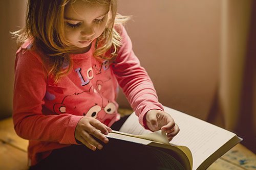

Untref School
Quienes somos
Somos una escuela primaria y secundaria con el objetivo de a brindar a cada alumno preparación integral, desde lo intelectual y los saberes prácticos, para la inserción satisfactoria en cualquier estudio superior o universitario.
¿Por qué elegirnos?
Ofrecemos la posibilidad de que su hijo pueda cursar toda la etapa primaria y secundaria con nosotros. El hecho de que su hijo pueda pasar toda la etapa escolar en una escuela de exelencia como la nuestra constituye un valor para muchos padres como usted.
Propuesta educativa
Primaria
Nuestra metodología se basa en el trabajo por areas, legua, matemáticas, ciencas naturales y ciencias sociales permitiendo aprendisaje por sí mismos y por el intercambio con el profesor y compañeros a travez dela investigación dirgida y materiales estimulantes
Secundaria
La propuesta educativa combina una sólida formación general con una amplia oferta de orientaciones que habilita a los alumnos a desempeñarse en diversos campos de acción profesional. De este modo, la escuela sostiene su misión fundacional de “Educar para la Vida”.
Últimas noticias
- Acto por el 9 de julio
- El día viernes 7 de julio se realizó en las instalaciones del SUM del colegio el acto conmemorativo por el día de la independencia con representaciones y números musicales a cargo de los alumnos de la escuela primaria.
- Competencias provinciales de atletismo
- Los alumnos del nivel secundario que han sido seleccionados para participar en las competencias provinciales de atletismo viajarán a la capital junto al equipo de profesores de educación física para participar en el certamen que se realizará los días 1, 2 y 3 de de agosto de 2023.
- Vacaciones de invierno
- La segunda y tercer semanas de julio la escuela permanecerá cerrada por vacaciones de invierno.